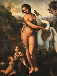
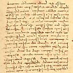

Leonardo Da Vinci
Cliquez sur les images pour les agrandir
1 
2 
3 
4 
5 
6 
7 
8 
9 
10 
11 
12 
13 
14 
15 
16 
17 
18 
Leonardo Da Vinci
(Vinci 1452 - Clos-Lucé 1519)

Introduction
Génie universel, érigé en figure symbolique de la Renaissance, Léonard de Vinci dépasse de loin, par le rayonnement et l'influence, ce monde des peintres qui fut d'abord le sien, ou ses contemporains virent son véritable royaume et dont il demeure l'un des « phares », sans éclipse depuis bientôt cinq siècles. Mais cette auréole ne fait qu'accuser les paradoxes de son étrange destin. Toscan qui poursuit, résume et dépasse les recherches du quattrocento florentin, il quitte Florence à trente ans sans y avoir conquis sa place au soleil ; une étape milanaise marque le zénith de sa carrière, et c'est au bord de la Loire que s'achèvera sa vieillesse errante. Peintre, il n'a produit qu'un petit nombre d'œuvres (parfois inachevées), une dizaine mentionnées par des documents d'archives ou des témoignages contemporains, une trentaine attribuables en tout, dont plus d'un tiers perdues. Enfin, cet homme d'une curiosité inlassable, qui a porté une égale passion aux mathématiques, aux sciences de la nature, aux arts et aux techniques, a laissé des carnets de notes, des milliers de dessins et de croquis, des projets étonnants, mais aucune grande réalisation plastique ou mécanique, aucun traité publié. Vu du dehors, Léonard apparaît comme un touche-à-tout génial, aventurier de la recherche pure, qui seule l'intéresse, et dont le tempérament paralyse non le pouvoir de création, mais la volonté créatrice. L'interprétation du « mystère Vinci » a suscité depuis un siècle une littérature innombrable et internationale, critique ou lyrique. Le cadre d'une notice permet seulement de rappeler les coordonnées essentielles de la carrière de Léonard, d'évoquer les directions multiples de sa recherche, de tracer un bilan sommaire de son œuvre d'artiste.
La vie et l'œuvre
Introduction
Tourmentée, velléitaire, sans être dramatique comme celle d'un Michel-Ange ou d'un Caravage, la vie de Léonard se découpe assez exactement en trois périodes presque égales (les années d'enfance mises à part) : l'une, florentine, qui s'achève en 1482, étape de formation ou Léonard apparaît voué surtout à la peinture ; la seconde (1482-1499) à la Cour de Milan, ou les activités de l'ingénieur, du sculpteur, du décorateur font concurrence à celles du peintre ; la dernière (1499-1519), nomade, ou, sans que l'artiste s'efface, les recherches de science pure prennent une place croissante.
Les années florentines
Léonard naît en 1452 à Vinci, bourgade perchée sur un contrefort de l'Apennin, parmi les vignes et les oliviers : il y demeure jusqu'à l'âge de seize ans. Fils naturel d'un jeune propriétaire foncier, qui deviendra plus tard notaire de la seigneurie, il connaîtra à peine sa mère, sans doute de condition modeste. Mais, élevé par ses grands-parents et par son père, en un temps ou la bâtardise ne choque personne, il n'apparaît nullement comme l'enfant « frustré » qu'on imagine parfois (et qui inspira à Freud un célèbre essai). On retiendra plutôt de cette enfance campagnarde sa familiarité avec la nature toscane, le paysage (le premier dessin connu de Léonard date de 1473 et c'est une vue du val d'Arno), les animaux, les plantes, les curiosités naturelles (comme cette grotte qu'il explora, triomphant de la peur par le désir de découvrir « les formes étranges de l'artificieuse Nature »), peut-être aussi une certaine gaucherie dans le comportement social et la vocation de la solitude.
En 1469, le grand-père mort, l'adolescent suit son père et son oncle, qui s'installent à Florence, et entre dans l'atelier de Verrocchio, également renommé comme sculpteur et comme peintre. Inscrit en 1472 dans la corporation des peintres, Léonard semble avoir la confiance de son maître, collaborant à son principal tableau, le Baptême du Christ (1) (il aurait exécuté les anges agenouillés et le fond de paysage). On mentionne sa beauté, sa force, son goût pour les mathématiques et la musique, et aussi sa propension à l'amour « grec », suivant la mode du temps (une dénonciation de 1476 n'aura pas de suite, mais ne laisse guère place au doute). À partir de 1480, il ne vit plus chez son père, mais dans une maison voisine du couvent de San Marco, achetée par Laurent de Médicis, qui l'emploie au décor des jardins. Mais son rôle paraît bien modeste. Léonard reste à l'écart de cette cour humaniste dont Botticelli est le peintre favori et Marsile Ficin l'oracle : plus scientifique et positif que mystique, il paraît rebelle au snobisme néoplatonicien. Il trouve des commandes ailleurs : en 1478, de la seigneurie (retable pour la chapelle du Palazzo Vecchio, que terminera Filippino Lippi) ; en 1481, du couvent de San Donato a Scopeto (l'Adoration des Mages (2) du musée des Offices, qu'il laissera inachevée) ; et plusieurs tableaux non documentés (Annonciations du Louvre et des Offices, Madone Benois (3) de l'Ermitage à Saint-Pétersbourg, etc.) doivent appartenir à cette période. Mais sa situation reste secondaire et il ne fait pas partie de l'équipe choisie en 1482 pour aller à Rome décorer la Sixtine. Travaillant lentement, désireux d'être libéré des soucis matériels, il cherche (et cherchera toute sa vie) un mécène capable d'apprécier la variété de ses talents. C'est à Milan qu'il le trouve d'abord.
Les années milanaises
Apprenant que Ludovic le More veut élever une statue équestre à la gloire de son père François Sforza, Léonard part pour Milan au printemps 1482 et propose au prince de lui « apprendre ses secrets » : une requête célèbre énumère en dix articles ses capacités d'ingénieur pour fortifier villes et ports, fabriquer bombardes et chars couverts, tandis qu'en temps de paix son œuvre « peut égaler celle de quiconque, soit pour la construction d'édifices publics ou privés, soit pour conduire l'eau d'un endroit à l'autre », sans oublier sculpture et peinture. Entré au service de Ludovic, qui le traite avec honneur et lui assure une large aisance, la statue équestre l'occupe des années durant : après d'innombrables études, seule la maquette du cheval est exposée en 1493 ; elle disparaîtra après la chute des Sforza. Mais, tout en gardant assez de loisirs pour se perfectionner en mathématiques (il fréquente les savants de Pavie, se lie d'amitié avec Luca Pacioli) et poursuivre des recherches de sciences naturelles, Léonard est employé sur des registres multiples : ordonnateur des tournois et cortèges d'une cour fastueuse, il est aussi le décorateur du Castello Sforzesco (salle « delle Asse » avec les entrelacs de verdure de son plafond), l'adducteur des eaux dans les douves du palais, le restaurateur de la « Sforzesca », exploitation agricole modèle des ducs. Et, malgré l'hostilité de Bramante, « cacique » de l'architecture lombarde, il fournit un projet pour la lanterne du dôme de Milan (1487), est appelé en consultation pour restaurer la cathédrale de Pavie (1490).
Quant aux commandes de peinture – en dehors de portraits, vraisemblables mais non documentés (portrait dit la Belle Ferronnière (4), au Louvre, le Musicien (5), à Milan, la Dame à l'hermine (6), à Cracovie, etc.) –, elles n'apparaissent qu'aux deux extrémités de la période milanaise. C'est, en 1483, le retable pour la confrérie de la Conception à San Francesco Grande, dont les volets sont confiés à Ambrogio De Predis, tandis que Léonard se charge de la partie principale, une Vierge à l'Enfant. On a identifié aujourd'hui ce tableau avec la Vierge aux rochers (7) de Londres (National Gallery), plutôt qu'avec celle du Louvre, qui serait quelque peu antérieure : l'œuvre, laissée inachevée, fit l'objet avec la confrérie d'un litige qui ne sera réglé qu'en 1506. Au contraire, la fresque de la Cène (8), commencée en 1496 pour le réfectoire de Santa Maria delle Grazie, était achevée en 1498 : elle excita une admiration unanime et classa Léonard parmi les premiers maîtres d'Italie.
Les années nomades
Mais la Cène est le chant du cygne d'un âge heureux : l'année suivante, Ludovic s'enfuit, chassé par l'armée de Louis XII. Léonard séjourne quelque temps à Mantoue– à la cour d'Isabelle d'Este, son admiratrice (dont il esquisse le portrait au fusain, aujourd'hui au Louvre) –, à Venise (1500), en Romagne (1502), ou il s'attache à la fortune de César Borgia, qui le nomme inspecteur de ses fortifications ; mais la destitution du condottiere par le nouveau pape, Jules II, met fin à cet épisode. Dès 1503, Léonard revient à Florence, ou son père va mourir ; il y est accueilli avec honneur, mais se heurte à un jeune et âpre rival : Michel-Ange. Pour célébrer les grandes victoires de Florence, la seigneurie lui commande une peinture murale commémorant la bataille d'Anghiari, tandis que Michel-Ange est chargé d'évoquer celle de Cascina. Les deux cartons sont exposés simultanément en 1505, et le succès va aux nus héroïques de Michel-Ange plus qu'au furieux choc de cavaliers représenté par Léonard. Celui-ci renonce très vite à l'exécution de la fresque, et, le carton détruit, l'œuvre n'est connue que par des dessins préparatoires et des copies (il en est de même pour une Léda (9) célèbre). Pour comble de malheur, la dérivation de l'Arno, faite sur les plans de Léonard pour assiéger Pise, est un échec qu'on impute à ses erreurs de calcul. Brocardé, blessé, il quitte sa patrie pour retourner à Milan, ou les occupants français lui font fête : le gouverneur, Charles d'Amboise, juge que « son nom, célèbre en peinture, est resté obscur dans les autres domaines par rapport à la renommée qu'il mériterait ». Léonard reprend d'anciens plans d'urbanisme, accepte la commande d'une nouvelle statue équestre – destinée cette fois à la tombe de Giangiacomo Trivulzio, le condottiere qui avait chassé les Sforza ! –, mais à leur tour les Français sont chassés en 1512.
Cette fois, c'est Rome qui attire Léonard : le nouveau pape, Léon X, est un Médicis et un mécène. Mais son homme de confiance est Raphaël. Julien de Médicis, frère du pontife, protège Léonard, le loge et, chargé d'assainir les marais Pontins, fait approuver son projet. Mais nul ne songe au vieux maître lorsque la mort de Bramante laisse vacante la direction des travaux de Saint-Pierre. Plongé dans ses recherches sur la quadrature du cercle et dans ses dissections anatomiques, il fait figure de rêveur, d'instable étranger au monde réel. Tel le voit l'ami de Raphaël, Baldassarre Castiglione (Il Cortegiano, 1508-1518) : « Un des premiers peintres du monde s'est mis à apprendre la philosophie, ou il a des concepts si étranges et des chimères si nouvelles qu'avec toutes les finesses de son pinceau il n'arriverait pas à les peindre. »
Il est naturel que las, désabusé, privé de son meilleur appui par la mort de Julien en 1516, Léonard accepte l'invitation d'un jeune roi victorieux qui rêve de transporter dans ses châteaux de la Loire le style de vie des cours italiennes. En mai 1516, il se présente à François Ier, accompagné du jeune et beau Francesco Melzi (1493-1570), son disciple préféré, apportant quelques chefs-d'œuvre peints durant ses années nomades et qu'achètera le roi (aujourd'hui au Louvre) : la Joconde (10), la Vierge, l'Enfant Jésus et sainte Anne (11), le Saint Jean-Baptiste (12) (et sans doute le Bacchus (13), transformation d'un autre Saint Jean-Baptiste). Le logement au manoir de Cloux, près d'Amboise, une très large pension et l'amitié du souverain, qui se plaît à l'écouter, lui assurent, après tant de traverses, un noble et paisible crépuscule. Une paralysie de la main l'empêche de peindre, non de créer. Projets d'escaliers monumentaux (qui peut-être inspirèrent celui de Chambord), de canal Loire-Saône, d'assèchement de la Sologne, avec création d'une ville neuve à Romorantin, proclament sa volonté de « continuer ». Mais, au printemps 1519, il tombe malade, désigne Melzi comme son exécuteur testamentaire en lui léguant tous ses manuscrits, et meurt le 2 mai. Il fut enterré dans l'église Saint-Florentin d'Amboise, et ses restes furent dispersés pendant les guerres de Religion.
Le penseur, le savant
Cette vie, glorieuse et tissée d'échecs, répond au caractère d'un homme singulier, déconcertant pour ses contemporains, qui le jugeaient hermétique, encore surprenant aujourd'hui par les témoignages qu'il a laissés de sa pensée. Son écriture inversée de gaucher a stimulé l'ingéniosité de déchiffreurs spécialisés. Ses carnets, nombreux, distribués entre ses admirateurs par le fils de Melzi, connurent de multiples avatars : les plus importants sont conservés à la bibliothèque Ambrosienne de Milan et à l'Institut de France ; mais plusieurs sont perdus, et d'autres n'ont été retrouvés qu'en 1967 à la Bibliothèque nationale de Madrid. Notations décousues d'observations scientifiques, accompagnées de croquis, de remarques de méthode, de réflexions philosophiques, ils nous laissent ignorer la vie et les sentiments de leur auteur. Silence qui relève de ce que Valéry appelle « les indifférences royales » de Léonard : indifférent à la gloire immédiate, aux biens de ce monde, sauf dans la mesure ou ils assurent la liberté de sa recherche ; imprévisible avec ses sautes d'humeur, ses dérobades, ses alternances d'enthousiasme et de lassitude devant l'œuvre en cours, ses abandons, nés d'une exigence de perfection. Une seule passion l'anime : la connaissance totale de l'univers visible, dans ses structures et ses mouvements. C'est une « passion intellectuelle qui met en fuite la sensualité » et d'ou naît « l'amour [...], qui grandit à mesure que cette connaissance devient plus certaine ».
Connaissance rationnelle, certes. Faut-il croire Vasari, d'après lequel Léonard « tenait en plus haut honneur d'être philosophe que chrétien » ? En tout cas, les notions de chute et de rédemption, le drame chrétien du salut lui restent étrangers. Il semble d'ailleurs également indifférent au paganisme esthétique de ses contemporains, à la mythologie comme à l'archéologie. Avec une sorte de stoïcisme serein, avec le culte de la solitude, son attitude reste celle du savant qui rejette les arguments d'autorité et fonde son jugement sur l'expérience.
Mais savant, comment, et dans quelle mesure ? Léonard est apparu longtemps comme l'image du géant autodidacte (lui-même écrivit : « On se croira fondé à me critiquer en alléguant que je n'ai pas de lettres »), du précurseur incompris. Depuis le début du XXe s., une réaction sans doute excessive a fait de lui un érudit, héritier de toute la pensée scientifique médiévale. On tend aujourd'hui à une opinion intermédiaire : Léonard n'est pas un illettré, mais il partage la culture moyenne des Florentins de son temps. Il sait du latin, est familier avec les Métamorphoses d'Ovide ; il connaît Dante et Pétrarque, mais il est surtout nourri des bestiaires et zoologies moralisés qu'affectionne le Moyen Âge, ainsi que des conteurs satiriques florentins.
Son image du cosmos, jeu de forces harmoniques et réceptacle de la lumière, avec une unité profonde du monde de la nature et du monde de l'âme, relève du platonisme diffus de l'époque, auquel s'ajoutent les doctrines de Nicolas de Cusa sur le mouvement, principe de toute vie. D'autre part, sa formation orale de praticien, commencée dans l'atelier de Verrocchio – géométrie, perspective, etc. –, dut s'élargir par la suite grâce à la lecture des traités de mécanique, des « théâtres de machines », déjà nombreux en Italie dans la seconde moitié du XVe s., grâce à la fréquentation d'hommes de science divers. Léonard ne deviendra jamais un savant du type de Copernic ou de Newton, de ceux qui renouvellent la science par leurs découvertes ou leurs hypothèses. Sa terminologie physique reste imprécise et contradictoire. En fait, tout en célébrant « la suprême certitude des mathématiques », il est avant tout un « visuel », pour qui l'œil, « fenêtre de l'âme, est la principale voie par laquelle notre intellect peut apprécier pleinement l'œuvre infinie de la nature ». Sa curiosité universelle refuse nos distinctions entre science pure et science appliquée, entre Beaux-arts et arts mécaniques. Il élargit et porte à sa perfection ce type de l'ingénieur-artiste dont Alberti avait été le premier modèle.
Sa recherche embrasse également l'astronomie et la géologie, la géométrie et la mécanique, l'optique et l'acoustique, la botanique et la métallurgie. Mais on relève dans les carnets trois « dominantes », qui frappent par l'abondance ou la singularité des notations. La première est l'anatomie, avec ces descriptions minutieuses, fruit de multiples dissections, illustrées de magnifiques dessins, dont certains sont consacrés à l'anatomie comparée (jeune homme/vieillard ; homme/animal). Léonard, par là, est une sorte de précurseur isolé de Vésale, le fondateur de l'anatomie moderne. Vient ensuite la mécanique, appliquée aux travaux de l'ingénieur – avec les inventions balistiques, les chars d'assaut, les pompes et les dragues, les ponts et les canaux – ainsi qu'à des projets de machines volantes fondées sur des analyses sagaces et neuves du vol des oiseaux. C'est enfin la vie du globe terrestre, à travers la mécanique des fluides et la géologie. Rien n'excite plus l'imagination poétique de Léonard que le « ballet héroïque » de la terre et de l'eau. De là les études de tourbillons, les croquis panoramiques si remarquables qui montrent la formation des vallées alpines ; de là les analyses de fossiles, de la forme des coquilles, de la raison de leur présence sur les montagnes comme dans les mers. De là surtout ces visions apocalyptiques, qui associent le destin des hommes aux cataclysmes du cosmos : « On verra sur la terre des créatures qui s'entre-tuent sans cesse. Leur méchanceté n'aura pas de limites. Leur violence détruira les grandes forêts du globe... Ô terre, qu'est-ce donc qui te retient de t'ouvrir et d'engouffrer l'homme dans les profondes crevasses de l'abîme. » C'est ce Léonard, visionnaire cosmique et « mage », qu'évoque, adouci par la barbe et les cheveux ondoyants, le sévère autoportrait présumé, à la sanguine, de la bibliothèque royale de Turin.
L'artiste
Que reste-t-il de cet immense effort sur le plan de la création artistique ? Pour l'architecture et la sculpture, des projets, purement théoriques en ce qui concerne la première. De très beaux dessins d'églises à coupole centrale flanquée d'absidioles – qui pourraient être de Bramante – attestent la prédilection de la Renaissance pour l'édifice à plan central, symbole de perfection. Pour la sculpture, de nombreuses études sont destinées aux monuments de Sforza et de Trivulzio : mais seuls le piédestal et le mouvement du cheval, plus ou moins cabré, ont retenu Léonard ; le cavalier est absent, ou à peine esquissé. Des sculptures qui lui ont été attribuées, aucune n'est certaine, même la plus vraisemblable, le petit groupe équestre en bronze de Budapest. Au fond, la sculpture semble avoir médiocrement intéressé Léonard : le fait d'être plus durable que la peinture ne lui concède aucune dignité ; elle lui est « inférieure, puisqu'elle ne peut représenter les choses transparentes ou lumineuses ». Elle reste « un art de très bref discours » alors que la peinture, « cosa mentale » dont « l'objet est de montrer l'homme et les intentions de son âme », est « de merveilleux artifice et de très haute spéculation ».
À cet art majeur, Léonard semble bien avoir consacré un traité, qu'il aurait rédigé à Milan et offert à Ludovic, mais qui a disparu. Le Trattato della pittura (14) (Codex urbinas, bibliothèque du Vatican), publié au milieu du XVIIe s., est une compilation, riche et maladroite, due à Melzi. Quant aux Carnets (15), ils nous livrent de nombreuses et subtiles observations, qui portent sur tous les aspects de l'art du peintre, dessin, perspective, technique picturale. Le trait majeur est la primauté donnée au dessin d'après nature sur l'étude de l'antique, au modelé sur le contour. Le secret de la peinture est dans le jeu des ombres et des lumières, c'est-à-dire le clair-obscur : « Celui qui évite de mettre des ombres rend son œuvre méprisable aux bons esprits, pour la faveur du vulgaire qui ne recherche que le brillant du coloris et dédaigne la beauté et merveille de la lumière. » On a souvent célébré la « modernité » à la fois minutieuse et poétique des notations de Léonard sur la brume couleur de rose du premier matin, l'effet lointain des fumées et poussières des villes, la couleur des montagnes éloignées, qui cessent en hiver d'être azurées, ou la rougeur du soleil dans les intervalles de la pluie. Et ce « luminisme » explique le rôle historique majeur d'un peintre si avare de ses œuvres.
Les premières peintures conservées de Léonard se situent dans la tradition plastique florentine, très écrite et un peu sèche. Lippi, Verrocchio, Ghirlandaio sont présents dans les Madones Litta (16) et Benois (toutes deux à l'Ermitage), les Annonciations, le Saint Jérôme (17) inachevé du Vatican, vigoureuse et sculpturale étude d'anatomie. L'Adoration des Mages des Offices ne se distingue que par la conception originale de la scène : elle substitue aux somptueux cortèges, dont Gozzoli a donné le plus bel exemple, l'image d'une foule éparse et comme prise de panique devant la vision insolite. Mais les œuvres milanaises – est-ce l'influence des paysages humides et gras de la Lombardie ? – vont apporter le modelé vaporeux et la moiteur du « sfumato », les tons glauques des lointains : ainsi la Vierge aux rochers, avec son mystérieux fond d'eaux et d'aiguilles rocheuses fondues dans la lumière, par-delà la demi-obscurité de la grotte. Et le choc produit par La Cène – seule grande œuvre achevée, hélas à demi-morte – ne tient pas seulement à la nouveauté de la composition, qui reprend celle d'Andrea del Castagno, mais divise les apôtres en groupes livrés à d'anxieux apartés : drame psychologique devant l'annonce de la trahison et l'incertitude sur le traître ; une nouveauté d'égale importance est la fusion spatiale que réalisent ce moelleux de la couleur, ce demi-jour ou baignent les personnages avant l'échappée du fond sur les collines bleues.
L'autre attrait neuf de Léonard peintre est l'énigme des visages, dans les tableaux de la dernière époque : l'étrange conception de la Vierge, l'Enfant Jésus et sainte Anne, ou, tandis que la Vierge se jette sur l'Enfant comme pour le protéger, sainte Anne reste immobile et souriante, sorte de sphinge annonciatrice d'un destin inéluctable ; la beauté pensive et calme de la Joconde, d'une Léda craintive et lointaine, du Saint Jean-Baptiste et du Bacchus. Qu'il s'agisse d'un portrait de dame florentine – Mona Lisa, femme de Francesco del Giocondo – ou de figures imaginées, c'est le même sourire ironique et doux, le même visage androgyne, avec cette « tendre mélancolie » qui enchantait Stendhal : images de rêve, qui symbolisent le mystère de l'univers pour l'esthétisme décadent de la fin du XIXe s. Mais, pour ceux-là même qu'agace une certaine « jocondolâtrie », la création léonardesque garde sa signification historique et sa valeur de symbole.
Quant aux dessins, tous nos contemporains admettent qu'ils suffisent à classer Léonard parmi les plus grands maîtres. On en connaît plusieurs milliers, dont aucun n'est indifférent. La plupart sont des croquis explicatifs d'un texte, ce qui d'ailleurs n'exclut pas leur valeur esthétique. Mais, en ne considérant que les dessins isolés et les grands albums de Windsor et de l'Ambrosienne, on demeure stupéfié par leur intensité, leur frémissement de vie comme par leur variété.
Variété des techniques : dessins à la pointe d'argent de la jeunesse, que détrônent peu à peu les sanguines, les dessins à la pierre noire relevés de craie blanche, plus moelleux et subtils ; et, constamment, dessins à la plume, plus cursifs, commentaires d'un texte ou premier jet d'une composition. Variété aussi des styles : certains dessins ont la tranchante précision de l'orfèvrerie ou de la médaille, tel ce morceau d'apparat (assez exceptionnel) qu'est le célèbre profil d'homme casqué du British Museum ; d'autres se réduisent à des jeux de courbes et de boucles qui suggèrent le mouvement en profondeur avec une force singulière (études de chats, combats de cavaliers pour la Bataille d'Anghiari (18)). La variété des thèmes n'est pas moindre puisqu'ils reflètent tout l'univers de Léonard : celui du savant, déjà évoqué, et celui de l'artiste. Ce sont les multiples études pour l'Adoration des Mages, les Vierges, la Cène, la Bataille, passionnantes parce qu'elles permettent de suivre les hésitations multiples, les crises de conscience du créateur ; ce sont les « têtes d'expression », parfois héroïques, plus souvent grimaçantes, voire caricaturales, qui opposent durement les âges et les caractères ; ce sont les études d'animaux et avant tout de chevaux, les études de fleurs et de branches, à la fois pleines d'amour et presque inquiétantes de précision et d'intensité ; ce sont enfin les paysages, tantôt d'une nature bucolique avec ses laboureurs et ses semeurs, tantôt d'un monde élémentaire et convulsif : les images du Déluge comptent parmi les plus étonnantes inventions de Léonard.
C'est à ce personnage du « grand rêveur » que les hommes ont été surtout sensibles au cours des âges. L'impact du peintre a été considérable, si l'on en juge par la multiplicité des variantes et copies du XVIe s. – qui posent de difficiles problèmes aux critiques –, par le reflet de Léonard chez certains cadets florentins épris de raffinement, Lorenzo di Credi (1456-1537) ou Piero di Cosimo (1462-1521), et par l'importance de son influence en Lombardie, avec un groupe robuste et parfois rustique : Bernardino Luini (vers 1485-1532), Ambrogio De Predis (1455-vers 1510), Giovanni Antonio Boltraffio (1467-1516).
Dernière grande figure du quattrocento, il est aussi l'initiateur de la « Haute Renaissance » : on perçoit son reflet chez Raphaël (qui s'est inspiré des apôtres de Milan pour son École d'Athènes), chez Fra Bartolomeo (1472-1517), chez Andrea del Sarto (1486-1530). Mais il faut retenir surtout la traînée lumineuse que son inquiétude et sa curiosité universelle ont laissée à travers quatre siècles : Rubens et Prud'hon, Goethe, Stendhal et Valéry l'ont salué comme le modèle du peintre, mais aussi de l'homme universel, du savant associé au poète et à l'artiste.

© 2006 Umanista.Net